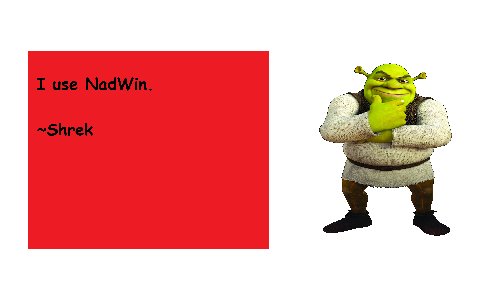

NadWin
C++ GUI Library for Windows.Simple, kinda fast and NOT powerful.
Are you tired of dealing with linker errors, hard api and responsive UI (not this page)?
Probably not, but if you do then this library is perfect for you.
Download, include and build.
Thanks to latest technology called
Compile from Source you can just include the library and build your GUI.
No "it works on my machine"
This library is just wrapper to WinAPI which can work on a potato from 90's (as long as it's running Windows XP+ lol).
Statistically 1 of 1 (100%) people testing this library was able to get it working on multiple machines.
🚀🚀🚀 Blazingly fast and small execut🚀able size🚀🚀
Seriously, just try it.

Not convinced yet?
What if I told you that Shrek is using NadWin?
And he built chromium for Nokia 3310 with it?